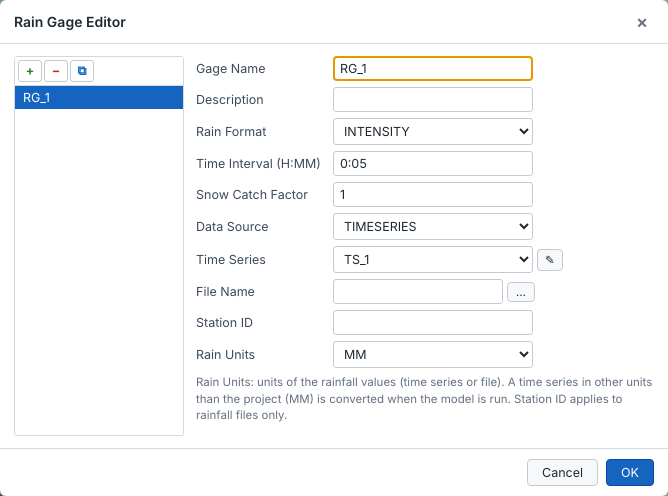
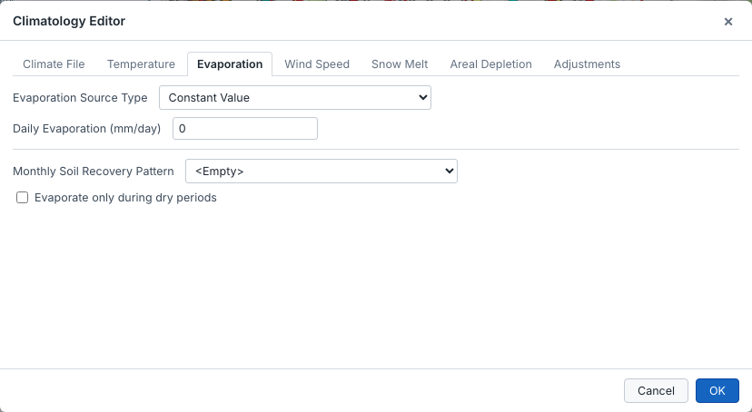
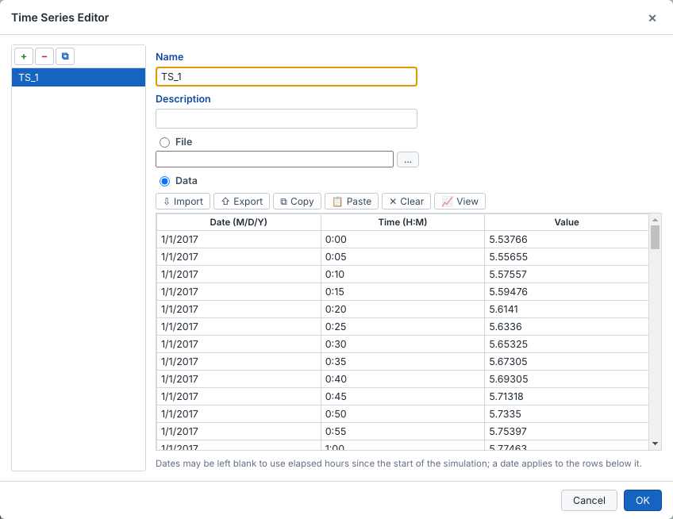
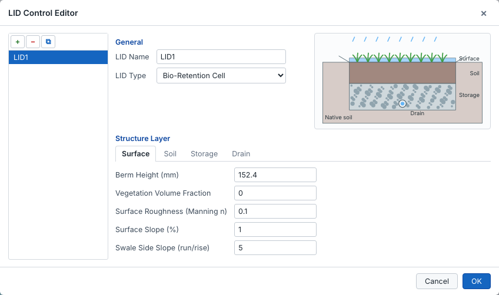
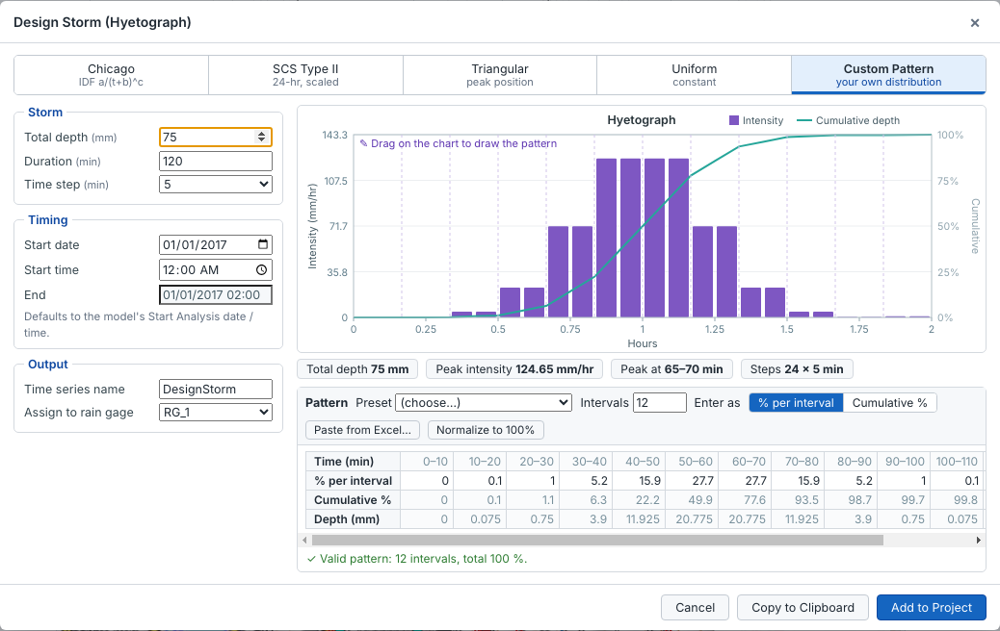

Rain gages, aquifers, snow packs, unit hydrographs, LID controls, transects, pollutants, land uses, curves, time series and patterns all use the same type of editor:
Open an editor from the Parameter View, or from the pencil button next to a reference in the Properties pane, for example the time series of a rain gage. Changes are applied when you click OK and can be undone.

The Climatology Editor has one tab per climate section: Climate File, Temperature, Evaporation, Wind Speed, Snow Melt, Areal Depletion and Adjustments.

A time series holds either its own data or a reference to an external file. You can import or export it as text, copy it to Excel or paste it from Excel, and view it as a graph. Dates may be left blank to use elapsed hours since the start of the simulation.

The LID Control Editor shows a cross section of the selected LID type: bio-retention cell, rain garden, green roof, infiltration trench, permeable pavement, rain barrel, rooftop disconnection or vegetative swale. It also has one tab per layer of that type (Surface, Soil, Pavement, Storage, Drain or Drain Mat).

Assign LID controls to a subcatchment with the LID Usage button in its properties.
Parameter View ▸ Options ▸ Reporting chooses which nodes, links and subcatchments are written to the status report, and whether the input summary, control actions and average results are included. The binary results file always holds every object, so maps, plots and themes are not affected.
Every editor, its fields and the steps to use it are described on its own page:
Tools ▸ Rainfall ▸ Design Storm creates a rainfall time series and, if you want, a rain gage that uses it.

| Method | Input |
|---|---|
| Chicago | IDF parameters i = a / (t + b)c, duration and the position of the peak. |
| SCS Type II | Total depth. The 24-hour distribution is scaled to the chosen duration. |
| Triangular | Total depth and position of the peak. |
| Uniform | Total depth, spread evenly over the duration. |
| Custom pattern | Percent of the total depth per interval, entered in the table or drawn on the chart. |
The summary line shows the total depth, the peak intensity, the time of the peak and the number of steps, so you can check the storm before adding it.